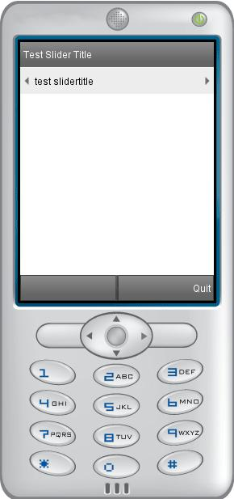

SliderTitle prototype for Tiny Mobile Widgets

Title which include arrows to slide content.
Routed to SliderTitle, elements slide horizontally from one border of the screen to another. The content to slide horizontally should be declared in the parent scene (that declares SliderTitle).
Translation animation is done in the parent scene thanks to eventOut parameters from SliderTitle : contentInPos and contentOutPos.
Data fields
- SFVec2f offset - Position of the SliderTitle
- MFString title - The text to display
- SFBool loop - When slidertitle displays the last element : if user press right arrow goes to the first element (as a circle). Same for first element to last element with left key.
- SFInt32 nbElements - Number of elements (number of characters of the string)
- SFInt32 currentElement - Current element (in the string)
- SFVec2f size - Size of the display area
Control fields
- SFBool enable - Enable/disable slider
- SFVec2f contentInPos - Content which appears on screen (eventOut)/li>
- SFVec2f contentOutPos - Content which disappear from the screen(eventOut)
- SFInt32 endMove - Finish animation event (eventOut)
- SFInt32 startMove - Start animation event (eventOut)